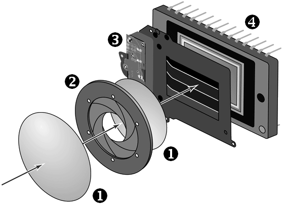

The picture on the left side represente the working of a digital camera
First, a camera cell chooses the appropriate exposure time and aperture for the case of each scene.
Secondly, the focusing is done. This determines which part of the composition of the photograph should be in focus.
Third, the framing is done and the settings are chosen.
Lastly, the shutter opens and closes, letting the light hit the sensor. The amount of light is determined by the opening time and size.